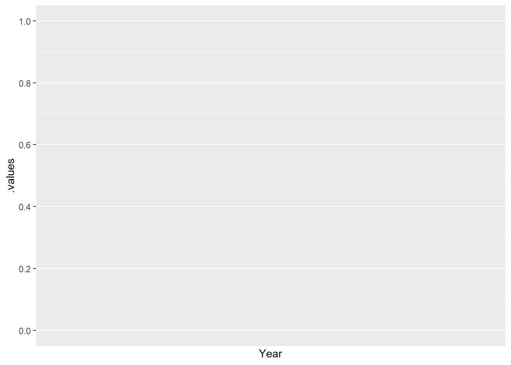

In this document the structure, data sources, underlying code, and methodologies used in the construction of the primary-final-useful (PFU) database are recorded.
Extending the IEA’s World Extended Energy Balance data from the final energy stage to the useful energy stage was achieved through assigning a number of Machine - Useful work product combinations to each unique Final energy carrier - Destination combination. For example, for the United Kingdom of Great Britain and Northern Ireland (GBR), residential electricity consumption was allocated to…..
ZM: After updating GBR with the newest BEIS ECUK data (22/10/2020) I will insert an image of the relevant section of the GBR FU Analysis spreadsheet.

Conventional, Approximate, Exact methodologies
In societal exergy analysis the treatment of the machine-useful work product combination Computer - Information processing has been subject to neglect, with only Ayres (Ayres, Ayres, and Pokrovsky 2005) providing data for the final-to-useful efficiency of what he terms “Electronic signal processing.”
In the PFU-Database we calculate the final-to-useful efficiency by establishing that the maximum efficiency of a computation is determined by the minimum quantity of energy required to erase one bit of information in an irreversible computer as set by the Landauer limit.
The Landauer limit is expressed in the following equation
\[ E = k_{B}Tln2 \]
Here \(k_{B}\) represents the Boltzmann constant, \(T\) represents the temperature of the heat sink, or the environmental temperature (termed \(T_{0}\) when calculating Carnot efficiencies), and \(E\) represents the quantity of energy required to erase one bit of information. In the PFU Database \(T_{0}\) is assumed to represent an average room temperature of 20C.
To calculate the efficiency of a computer we require corresponding performance data, i.e. data for the number of bit operations performed per unit energy, however, such data is rare necessitating an approximate approach. To achieve this we used data provided by Jonathan Koomey et al (Koomey et al. 2010) for “Computations per kWh,” from which Koomey’s Law was established, which states “The electrical efficiency of computation has doubled roughly every year and a half for more than six decades”.
The performance metric “Computations” is a estimation based on the methodology in Nordhaus (Nordhaus 2007), preventing conversion into bit operations per second, consequently we used this trend as an indicator of technological progress, which we then applied to a sample of bit operations per second data points.
ZM: Utilising this approach yields a single final-to-useful exergy efficiency metric, we need to think about how to separate eta.fu and phi.u.
Limits to the final-to-useful efficiencies of machines used in the PFU Database project were compiled from a variety of sources. Table